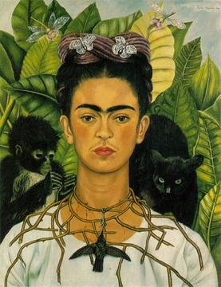

Self-Portrait with Thorn Necklace and Hummingbird
Frida Kahlo · 1940 · Oil on canvas on masonite · 61.2 × 47 cm · Harry Ransom Center, University of Texas at Austin
In copyright. Look and learn: shown for study, not for download.
Frida Kahlo painted this in 1940, after her divorce from Diego Rivera and the end of her affair with the photographer Nickolas Muray. Muray bought the portrait shortly after it was finished. It is small, about 24 by 18 inches. The University of Texas at Austin acquired it in 1966, and it belongs to the Nickolas Muray collection at the Harry Ransom Center.